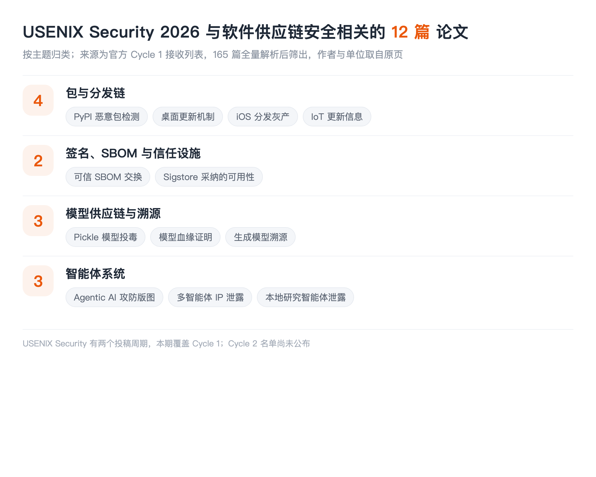

本文看点
01
165篇全量解析后筛出
02
签名与SBOM仍是重头
03
Pickle模型投毒卷土重来
01
LIST INFO
本期说明
【会议】USENIX Security 2026，第 35 届 USENIX 安全研讨会，2026 年 8 月 12 至 14 日，美国巴尔的摩
【来源】USENIX Security 2026 官方 Cycle 1 接收列表，共 165 篇，全量解析后逐篇判断
【口径】只收与软件供应链安全直接相关的：包与分发、签名与 SBOM、模型制品与溯源、智能体系统。固件模糊测试、密码学协议、隐私计算这些不收

— USENIX Security 2026 供应链相关论文的主题分布
先说数据。这一期是四期盘点里数据质量最好的一期：官方页面完整拿到了 165 篇的标题和作者单位，没有截断、没有靠关键词猜，是把整份名单解析出来逐篇判断的。作者和单位全部取自官方页原文。唯一的缺口是 USENIX Security 有两个投稿周期，本期只覆盖 Cycle 1，Cycle 2 的名单还没公布。顺带一提，本账号此前解读过的几篇 USENIX Sec 26 论文（恶意 Agent Skill 实测、token 长度侧信道、OpenHarmony 设计级漏洞 SoK）都不在 Cycle 1 里，应该在 Cycle 2，等公布了再补一期。
02
DIST
包与分发链
01
Cutting the Gordian Knot: Detecting Malicious PyPI Packages via a Knowledge-Mining Framework
Wenbo Guo, Chengwei Liu, Ming Kang, Yiran Zhang, Jiahui Wu, Zhengzi Xu, Vinay Sachidananda, Yang Liu
Nanyang Technological University, Nankai University, Sichuan University, Imperial Global Singapore
从现有检测器的误报和漏报里挖行为知识，再拿这些知识去检测恶意 PyPI 包。本账号已解读过，思路是把别人踩过的坑变成自己的特征，这在检测器普遍误报率 15% 到 30% 的现状下是个很实在的切入点。
02
When Updates Backfire: A Black-Box Security Analysis of Desktop Software Update Mechanisms
Jie Wan, Pengcheng Xia, Haoyu Wang
Huazhong University of Science and Technology
黑盒分析桌面软件的更新机制。更新通道是供应链上最诱人的一环：它有最高权限、自动执行、用户不会审查。而桌面端不像移动端有统一商店兜底，每家自己实现更新逻辑，实现质量参差不齐。标题说"更新反而害了你"，指的就是这条本该修复问题的通道自己变成了入口。
03
Cracks in the Walled Garden: Dissecting the Gray-Market of Unauthorized iOS App Distribution via Ad Hoc Sideloading
Yijing Liu, Yiming Zhang, Baojun Liu, Haixin Duan
Tsinghua University, BNRist
拆解 iOS 非授权分发的灰色市场。苹果的围墙花园被认为是最严的分发管控，这篇讲的是绕过它的那条侧载产业链。绕过官方分发渠道的灰产，本质上就是给整个生态开了一条不受审核的供应链，这和企业证书滥用、第三方应用商店是同一类问题。
04
Missing, Present and Conflicting: A Large Scale Analysis of IoT Update Information in the EU Market
Swaathi Vetrivel, Michel van Eeten, Carlos H. Gañán
Delft University of Technology
大规模分析欧盟市场上 IoT 设备的更新信息。标题三个词点明了发现：更新信息要么缺失、要么存在、要么互相矛盾。这是合规视角的供应链问题，欧盟新规要求厂商披露支持期限，而这篇量化了披露质量到底如何。买设备的人无法判断它还能收几年补丁，这本身就是风险。
03
TRUST
签名、SBOM 与信任设施
05
Trustworthy and Confidential SBOM Exchange
Eman Abu Ishgair, Chinenye Okafor, Marcela S. Melara, Santiago Torres-Arias
Purdue University, Intel Corporation
做可信且保密的 SBOM 交换。SBOM 推了这些年，卡点已经从"怎么生成"转移到"怎么交换"：供应商愿意给你成分清单，但不愿意让全世界都看到自己的技术栈；采购方需要验证清单可信，又不能只听供应商一面之词。这篇要同时解决可信和保密这对矛盾。
06
Why Johnny Adopts Identity-Based Software Signing: A Usability Case Study of Sigstore
Kelechi G. Kalu, Sofia Okorafor, Tanmay Singla, Sophie Chen, Santiago Torres-Arias, James C. Davis
Purdue University, Carnegie Mellon University
研究开发者为什么会采纳 Sigstore 这种基于身份的软件签名。Sigstore 把签名从"管理长期密钥"变成了"用现有身份换短期证书"，技术上解决了密钥管理这个最大的采纳障碍。但技术可行不等于会被用，这篇走的是可用性研究路线，问的是真实开发者的采纳动机和阻力。签名基础设施的瓶颈早就不在密码学，而在人愿不愿意用。
04
MODELS
模型供应链与溯源
07
The Art of Hide and Seek: Making Pickle-Based Model Supply Chain Poisoning Stealthy Again
Tong Liu, Guozhu Meng, Peng Zhou, Zizhuang Deng, Shuaiyin Yao, Kai Chen
Institute of Information Engineering, Chinese Academy of Sciences, Shanghai University, Shandong University
让基于 pickle 的模型供应链投毒重新变得隐蔽。pickle 反序列化能执行任意代码是老问题，模型托管平台后来都加了扫描器。标题里"重新"两个字是关键：这篇是在已有防御的前提下重新把攻击做隐蔽，属于攻防对抗进入下一轮的信号。CCS 那期有一篇查预训练模型 Hub 的整体风险，两篇正好是同一个生态的攻防两侧。
08
Attesting Model Lineage by Consisted Knowledge Evolution with Fine-Tuning Trajectory
Zhuoyi Shang, Jiasen Li, Pengzhen Chen, Yanwei Liu, Xiaoyan Gu, Weiping Wang
Institute of Information Engineering, Chinese Academy of Sciences
用微调轨迹来证明模型血缘。给定两个模型，判断其中一个是不是从另一个微调来的。这件事对供应链的意义很直接：模型被下游改过之后，要能追回它的来源，才谈得上追责和许可证合规。这和包生态里做代码溯源、二进制溯源是同一件事，只是对象换成了权重。
09
Identifying Provenance of Generative Text-to-Image Models
Anna Yoo Jeong Ha, Wenxin Ding, Stanley Wu, Shawn Shan, Haitao Zheng, Ben Y. Zhao
University of Chicago
识别生成式文生图模型的来源。给一张图，判断它出自哪个模型。这是溯源的另一个方向：不从制品查来源，而是从产物反推制品。在模型被大量微调、蒸馏、二次分发的今天，这类能力是判断责任归属的前提。
05
AGENTS
智能体系统
10
SoK: Attack and Defense Landscape of Agentic AI Systems
Juhee Kim, Wenbo Guo, Dawn Song
UC Berkeley, Seoul National University, UC Santa Barbara
Agentic AI 攻防版图的系统化梳理。本账号已解读过，不过又是一个标题对不上的例子：它的预印本叫《The Attack and Defense Landscape of Agentic AI: A Comprehensive Survey》，和 USENIX 正式版标题差得挺远，同一批核心作者。这已经是这几期盘点里第三次遇到 camera-ready 换标题了，查重只匹配标题一定会出事。
11
MASLeak: Investigating and Exposing Intellectual Property Leakage Vulnerabilities in Multi-Agent Systems
Liwen Wang, Wenxuan Wang, Shuai Wang, Zongjie Li, Zhenlan Ji, Zongyi Lyu, Daoyuan Wu, Shing-Chi Cheung
The Hong Kong University of Science and Technology, Renmin University of China, Lingnan University
多智能体系统里的知识产权泄露。多智能体协作时，各个智能体的提示词、工具定义、内部策略要在系统里流转，而这些恰恰是开发者最核心的资产。一个智能体被攻破，泄露的可能是整条流水线的设计。
12
Network-Level Prompt and Trait Leakage in Local Research Agents
Hyejun Jeong, Mohammadreza Teymoorianfard, Abhinav Kumar, Amir Houmansadr, Eugene Bagdasarian
University of Massachusetts Amherst
本地研究型智能体在网络层泄露提示词和用户特征。哪怕智能体跑在本地，它检索网页、调用 API 的流量模式仍然会把用户在问什么泄露出去。本账号解读过从 token 长度侧信道重建对话那篇，这篇是同一类思路在智能体场景的延伸：加密保住了内容，保不住行为。
06
TAKEAWAYS
一点观察
四大安全会里，只有 USENIX 还在认真做传统信任基础设施。 SBOM 交换、Sigstore 的采纳可用性、桌面更新机制、iOS 分发灰产、IoT 更新信息披露，这五篇是标准的供应链基础工程，而这类论文在 S&P、CCS、NDSS 的今年名单里几乎找不到。做这个方向的人需要知道该往哪投。
Purdue 那个组在两个会议上同时推进签名这条线。 USENIX 这边是 SBOM 交换和 Sigstore 采纳可用性，ASE 那期还有一篇《Context-Aware Trust Verification for Identity-Based Software Signing》，作者里 Chinenye Okafor、James C. Davis、Santiago Torres-Arias 都是同一批人。三篇连起来看是一条完整的路线：先研究开发者为什么愿意签，再研究签名之上怎么做信任判定，再研究签出来的成分清单怎么安全地交换。这种成体系的推进，比零散的单点论文更值得跟。
pickle 投毒"重新"变隐蔽，是一个值得警惕的信号。 模型托管平台加了扫描器之后，这类攻击一度被认为收敛了，而这篇把它重新做隐蔽。安全史上这个模式反复出现：防御上线、攻击沉寂、然后以更隐蔽的形态回来。扫描器的存在会筛选出更强的攻击，而不是消灭攻击，这一条对所有依赖扫描的治理方案都适用。
溯源今年集中爆发。 模型血缘、生成图像来源、编译器溯源（CCS）、溯源日志防篡改（S&P），四个会议不约而同地在做"这个东西到底从哪来"。这背后是同一个变化：当制品可以被大量二次加工和再分发，来源就从一个元数据问题变成了责任归属问题。包生态用了十几年才把来源验证做成基础设施，模型这条链现在才刚开始。